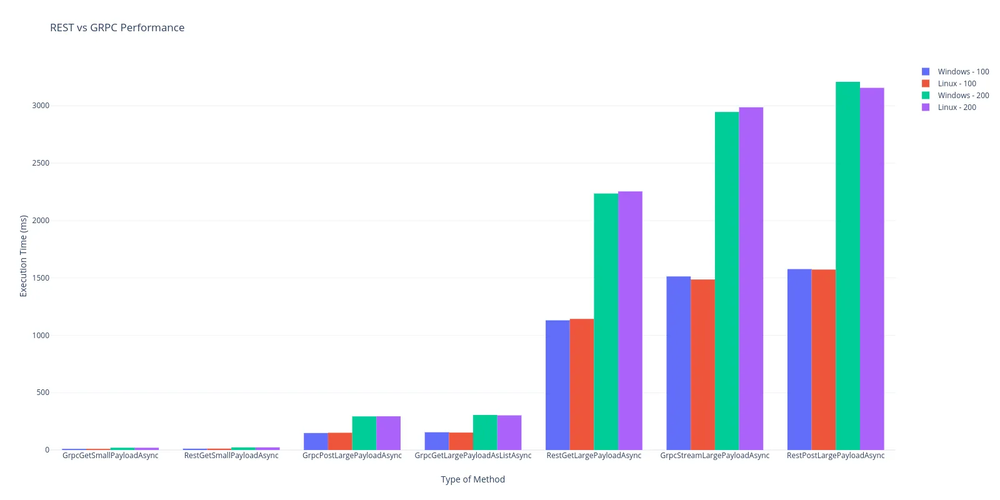

gRPC - Google Remote Procedure Call
Works over HTTP, and gives more flexibility than REST, however there are not many libraries for front-end languages.
And it uses protobuf protocol
Each request consists of the following parts
- Request name
- Request body
- Response body
syntax = "proto3";
import "google/protobuf/timestamp.proto";
service BillingService{
rpc GetBalance(GetBalanceRequest) returns (GetBalanceResponse);
}
message GetBalanceRequest{
repeated string account_ids = 1;
}
message GetBalanceResponse{
repeated Account accounts = 1;
}
message Account{
string user_id = 1;
string account_id = 2;
AccountType account_type = 3;
int64 balance = 4;
string currecny = 5;
google.protobuf.Timestamp updated_at = 6;
}
enum AccountType{
ACCOUNT_TYPE_UNDIFINED = 0;
ACCOUNT_TYPE_1 = 1;
ACCOUNT_TYPE_2 = 2;
ACCOUNT_TYPE_3 = 3;
}
service BillingService - could be described as package or group of methods
GetBalance - method name
GetBalanceRequest - Request, could be empty
GetBalanceResponse - Response, also could be empty
Each message (response or request) consists of several (may be no one) fields
Each field can be set
//String value
string user_id = 1;
//Array of int8
repeated int8 ids = 2;
//Custom message type
CustomMessage custom_message = 3;
Why to use grcp instead of REST?¶
- No artificial restrictions in terms of method types
- Besides the fact that we can use GET, POST etc. as we wish, it still may bring some frustration
- More flexible types
- There are more variety of types, for example int4, timestamp etc.
- Speed
- You can see on the graph that gRPC is much faster on big data
- Here is the link
